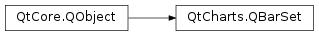

QtCharts.QBarSet¶
Note
This class was introduced in Qt 5.7.
Synopsis¶
Functions¶
- def
__lshift__(value) - def
append(value) - def
append(values) - def
at(index) - def
borderColor() - def
brush() - def
color() - def
count() - def
insert(index, value) - def
label() - def
labelBrush() - def
labelColor() - def
labelFont() - def
operator[](index) - def
pen() - def
remove(index[, count=1]) - def
replace(index, value) - def
setBorderColor(color) - def
setBrush(brush) - def
setColor(color) - def
setLabel(label) - def
setLabelBrush(brush) - def
setLabelColor(color) - def
setLabelFont(font) - def
setPen(pen) - def
sum()
Signals¶
- def
borderColorChanged(color) - def
brushChanged() - def
clicked(index) - def
colorChanged(color) - def
doubleClicked(index) - def
hovered(status, index) - def
labelBrushChanged() - def
labelChanged() - def
labelColorChanged(color) - def
labelFontChanged() - def
penChanged() - def
pressed(index) - def
released(index) - def
valueChanged(index) - def
valuesAdded(index, count) - def
valuesRemoved(index, count)
Detailed Description¶
-
class
PySide2.QtCharts.QtCharts.QBarSet(label[, parent=nullptr])¶ Parameters: - label – unicode
- parent –
PySide2.QtCore.QObject
-
PySide2.QtCharts.QtCharts.QBarSet.append(value)¶ Parameters: value – PySide2.QtCore.qreal
-
PySide2.QtCharts.QtCharts.QBarSet.append(values) Parameters: values –
-
PySide2.QtCharts.QtCharts.QBarSet.at(index)¶ Parameters: index – PySide2.QtCore.intReturn type: PySide2.QtCore.qreal
-
PySide2.QtCharts.QtCharts.QBarSet.borderColor()¶ Return type: PySide2.QtGui.QColor
-
PySide2.QtCharts.QtCharts.QBarSet.borderColorChanged(color)¶ Parameters: color – PySide2.QtGui.QColor
-
PySide2.QtCharts.QtCharts.QBarSet.brush()¶ Return type: PySide2.QtGui.QBrush
-
PySide2.QtCharts.QtCharts.QBarSet.brushChanged()¶
-
PySide2.QtCharts.QtCharts.QBarSet.clicked(index)¶ Parameters: index – PySide2.QtCore.int
-
PySide2.QtCharts.QtCharts.QBarSet.color()¶ Return type: PySide2.QtGui.QColor
-
PySide2.QtCharts.QtCharts.QBarSet.colorChanged(color)¶ Parameters: color – PySide2.QtGui.QColor
-
PySide2.QtCharts.QtCharts.QBarSet.count()¶ Return type: PySide2.QtCore.int
-
PySide2.QtCharts.QtCharts.QBarSet.doubleClicked(index)¶ Parameters: index – PySide2.QtCore.int
-
PySide2.QtCharts.QtCharts.QBarSet.hovered(status, index)¶ Parameters: - status –
PySide2.QtCore.bool - index –
PySide2.QtCore.int
- status –
-
PySide2.QtCharts.QtCharts.QBarSet.insert(index, value)¶ Parameters: - index –
PySide2.QtCore.int - value –
PySide2.QtCore.qreal
- index –
-
PySide2.QtCharts.QtCharts.QBarSet.label()¶ Return type: unicode
-
PySide2.QtCharts.QtCharts.QBarSet.labelBrush()¶ Return type: PySide2.QtGui.QBrush
-
PySide2.QtCharts.QtCharts.QBarSet.labelBrushChanged()¶
-
PySide2.QtCharts.QtCharts.QBarSet.labelChanged()¶
-
PySide2.QtCharts.QtCharts.QBarSet.labelColor()¶ Return type: PySide2.QtGui.QColor
-
PySide2.QtCharts.QtCharts.QBarSet.labelColorChanged(color)¶ Parameters: color – PySide2.QtGui.QColor
-
PySide2.QtCharts.QtCharts.QBarSet.labelFont()¶ Return type: PySide2.QtGui.QFont
-
PySide2.QtCharts.QtCharts.QBarSet.labelFontChanged()¶
-
PySide2.QtCharts.QtCharts.QBarSet.__lshift__(value)¶ Parameters: value – PySide2.QtCore.qrealReturn type: PySide2.QtCharts.QtCharts::QBarSet
-
PySide2.QtCharts.QtCharts.QBarSet.operator[](index) Parameters: index – PySide2.QtCore.intReturn type: PySide2.QtCore.qreal
-
PySide2.QtCharts.QtCharts.QBarSet.pen()¶ Return type: PySide2.QtGui.QPen
-
PySide2.QtCharts.QtCharts.QBarSet.penChanged()¶
-
PySide2.QtCharts.QtCharts.QBarSet.pressed(index)¶ Parameters: index – PySide2.QtCore.int
-
PySide2.QtCharts.QtCharts.QBarSet.released(index)¶ Parameters: index – PySide2.QtCore.int
-
PySide2.QtCharts.QtCharts.QBarSet.remove(index[, count=1])¶ Parameters: - index –
PySide2.QtCore.int - count –
PySide2.QtCore.int
- index –
-
PySide2.QtCharts.QtCharts.QBarSet.replace(index, value)¶ Parameters: - index –
PySide2.QtCore.int - value –
PySide2.QtCore.qreal
- index –
-
PySide2.QtCharts.QtCharts.QBarSet.setBorderColor(color)¶ Parameters: color – PySide2.QtGui.QColor
-
PySide2.QtCharts.QtCharts.QBarSet.setBrush(brush)¶ Parameters: brush – PySide2.QtGui.QBrush
-
PySide2.QtCharts.QtCharts.QBarSet.setColor(color)¶ Parameters: color – PySide2.QtGui.QColor
-
PySide2.QtCharts.QtCharts.QBarSet.setLabel(label)¶ Parameters: label – unicode
-
PySide2.QtCharts.QtCharts.QBarSet.setLabelBrush(brush)¶ Parameters: brush – PySide2.QtGui.QBrush
-
PySide2.QtCharts.QtCharts.QBarSet.setLabelColor(color)¶ Parameters: color – PySide2.QtGui.QColor
-
PySide2.QtCharts.QtCharts.QBarSet.setLabelFont(font)¶ Parameters: font – PySide2.QtGui.QFont
-
PySide2.QtCharts.QtCharts.QBarSet.setPen(pen)¶ Parameters: pen – PySide2.QtGui.QPen
-
PySide2.QtCharts.QtCharts.QBarSet.sum()¶ Return type: PySide2.QtCore.qreal
-
PySide2.QtCharts.QtCharts.QBarSet.valueChanged(index)¶ Parameters: index – PySide2.QtCore.int
-
PySide2.QtCharts.QtCharts.QBarSet.valuesAdded(index, count)¶ Parameters: - index –
PySide2.QtCore.int - count –
PySide2.QtCore.int
- index –
-
PySide2.QtCharts.QtCharts.QBarSet.valuesRemoved(index, count)¶ Parameters: - index –
PySide2.QtCore.int - count –
PySide2.QtCore.int
- index –
© 2018 The Qt Company Ltd. Documentation contributions included herein are the copyrights of their respective owners. The documentation provided herein is licensed under the terms of the GNU Free Documentation License version 1.3 as published by the Free Software Foundation. Qt and respective logos are trademarks of The Qt Company Ltd. in Finland and/or other countries worldwide. All other trademarks are property of their respective owners.